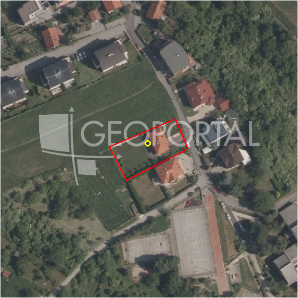

#8847 · Građevinsko zemljište u Šestinama
Šestine, Podsljeme, Grad Zagreb · zemljiste · njuskalo · status active · oglas ↗
Ocjena
- Score
- 56 rule 56 · LLM – · 12.09.2026.
- RLV
- 232.000 € (208 €/m²) · ratio 1,40
- Ukupna investicija
- 991.000 €
- GBP
- 400 m²
- Feedback
- –
- CRM
- –
Oglas
- Cijena
- 165.000 € (113 €/m²)
- Površina
- 1.463 m² · DKP 1.112 m² (odstupanje -24,0 %)
- Prodavatelj
- agencija · Astera nekretnine
- Prvi put
- 11.09.2026. · zadnje 11.09.2026. · 0 d na tržištu
Povijest cijene
| Datum | Cijena |
|---|---|
| 11.09.2026. | 165.000 € |
Flagovi
zgrade_bez_rusenja zgrade na čestici bez spomena rušenja (−10)zone_uncertainty zona nije pregledana (reviewed: false) (−5)
djelomicno_gradivo djelomicno_gradivo
gbp_iz_oglasa GBP preuzet iz oglasa (gbp_claim)
llm_pending LLM ekstrakcija/ocjena nedostupna
Komponente score-a
| rlv | {'gbp': 400.0, 'kis': 1.5, 'nkp': 328.0, 'noi': None, 'rlv': 231602.7826086958, 'ratio': 1.4036532279314897, 'value': None, 'phases': 1, 'profile': 'zagreb_visestambeno', 'gdv_neto': 1259520.0, 'cost_soft': 26400.0, 'gdv_bruto': 1574400.0, 'kis_known': True, 'total_inv': 991300.0, 'cost_build': 660000.0, 'cost_other': 130000.0, 'cost_sales': 47232.0, 'demolition': False, 'gbp_source': 'min(kis,gbp_claim)', 'rlv_per_m2': 208.2159653774955, 'parcel_area': 1112.32, 'parcelation': False, 'roi_on_cost': 0.2229274689801271, 'profit_at_ask': 220988.0, 'cost_demolition': 0.0, 'total_inv_phase': 991300.0, 'parcel_area_effective': 817.5551999999999, 'sale_price_per_m2_nkp': 4800.0} |
| hard | [] |
| info | ['djelomicno_gradivo', 'gbp_iz_oglasa', 'llm_pending'] |
| rubric | {'permits': {'max': 10.0, 'detail': {'permit': 'none'}, 'points': 0.0}, 'physical': {'max': 10.0, 'detail': {'slope_pct': 9.63, 'road_access': 'yes', 'slope_points': 4.0}, 'points': 7.0}, 'liquidity': {'max': 10.0, 'detail': {'n_cuts': 0, 'points_cut': 0.0, 'points_days': 0.03333333333333333, 'seller_type': 'agencija', 'points_fresh': 1.0, 'price_cut_pct': None, 'days_on_market': 1, 'points_private': 0}, 'points': 1.03}, 'rlv_ratio': {'max': 40.0, 'detail': {'rlv': 231603, 'ratio': 1.404, 'asking_price': 165000.0}, 'points': 37.11}, 'zone_quality': {'max': 15.0, 'detail': {'no_upu': True, 'source': 'gis', 'zone_class': 'mjesovito_pretezito_stambeno', 'zone_ideal': True, 'gp_uredjeni': True}, 'points': 12.0}, 'price_vs_benchmark': {'max': 15.0, 'detail': {'source': 'auto:Podsljeme', 'deviation': 0.295, 'ask_eur_m2': 113, 'benchmark_eur_m2': 160.0}, 'points': 13.43}} |
| weights | {'llm': 0.4, 'rule': 0.6, 'model': 0.0} |
| penalties | {'zone_uncertainty': 5, 'zgrade_bez_rusenja': 10} |
| raw_score | 70,6 |
| rlv_notes | ['gradivo 74 % čestice (818 m²) — ostatak izvan gradive zone'] |
| flag_notes | {'max_gbp': 1668, 'total_inv': 991300, 'zone_code': 'M1', 'zone_class': 'mjesovito_pretezito_stambeno', 'zone_source': 'gis', 'zone_reviewed': False, 'commercial_pct': 0.0, 'buildings_share': 0.111, 'commercial_source': 'zone_rule'} |
| caps_applied | [] |
GIS
- Čestica
- k.o. 335258, k.č. 1593/1 (pin_buffer, 0,83); k.o. 335258, k.č. 1601/1 (pin_buffer, 0,79); k.o. 335258, k.č. 1603 (pin_buffer, 0,78)
- Zona
- M1 (mjesovito_pretezito_stambeno) · NIJE pregledana
- kig / kis / katnost
- 0,40 / 1,50 / Po+P+3+Pk
- GP / UPU
- uredjeni · UPU ne
- Pristup / nagib
- yes · 9,6 % (max 13,1 %)
- More
- –
- Zaštite
- Natura ne · zaštićeno ne · kulturno dobro ne
- Zgrade na čestici
- 11 %
- Match
- 0,83
Karta
Ortofoto (DOF)

RLV kalkulacija — pretpostavke
| gbp | {'value': 400.0, 'source': 'min(kis,gbp_claim)'} |
| kis | {'value': 1.5, 'source': 'gis'} |
| soft_pct | {'value': 0.04, 'source': 'profil'} |
| nkp_ratio | {'value': 0.82, 'source': 'profil'} |
| cost_other | {'value': 130000.0, 'source': 'profil: doprinosi+uređenje po m² GBP, financiranje+rezerva % gradnje'} |
| zone_share | {'value': 0.735, 'source': 'gis'} |
| parcel_area | {'value': 1112.32, 'source': 'dkp'} |
| asking_price | {'value': 165000.0, 'source': 'oglas'} |
| margin_on_cost | {'value': 0.15, 'source': 'profil'} |
| build_cost_per_m2_gbp | {'value': 1650.0, 'source': 'profil'} |
| sale_price_per_m2_nkp | {'value': 4800.0, 'source': 'benchmark:override:Šestine'} |
| transfer_tax_and_acquisition | {'value': 0.06, 'source': 'profil'} |
Ekstrakcija iz oglasa
| gbp_claim | 400.0 |
| slope_mention | strmo |
Benchmarks mikrolokacije
| Vrsta | Vrijednost | n | Od | Izvor |
|---|---|---|---|---|
| newbuild_sale_eur_m2_nkp | 4.800 | – | 12.09.2026. | override |
Opis oglasa
Prodaje se građevinsko zemljište u Šestinama površine 1463 m2 od kojih je 840 m2 u građevinskoj zoni dok je ostatak u zelenom pojasu. Zemljište je odmah uz širu ulicu na koju ima frontu od skoro 30 metara. Teren je u padu ali uz dobro projektiranje ta činjenica neće poskupiti troškove gradnje. Odlična parcela za obiteljsku kuću ili manju zgradu. Urbano pravilo 2.1. Smjernice iz prostornog plana: - gradnja samostojećih građevina; - najmanja površina građevne čestice je 800 m2 - najveća izgrađenost građevne čestice je 20%; - najveći GBP je 400 m2 - najveći ki 0,5; - najmanji prirodni teren je 60% površine građevne čestice i nije ga moguće planirati unutar prostora rezerviranog za proširenje postojeće ulice; - najveća visina je dvije nadzemne etaže, pri čemu se druga etaža oblikuje kao potkrovlje ili uvučeni kat; - najmanje 2 PGM/1 stan, uz obvezan smještaj vozila na građevnoj čestici (ne unutar rezervacije proširenja postojeće ulice - veći dio u glavnoj građevini ili u izdvojenoj garaži); druge namjene prema normativima ovih odredbi; - pomoćne građevine su iza građevnog pravca glavne građevine,; iznimno, na strmom terenu, garaža se može graditi na rubnoj liniji rezervacije proširenja ulice, odnosno na regulacijskoj liniji ako za ulicu nije planirano ili nije potrebno osigurati proširenje; - udaljenost građevnog pravca glavne građevine od rubne linije rezervacije proširenja ulice, odnosno od regulacijske linije ako za ulicu nije planirano ili nije potrebno osigurati proširenje, najmanje je 5,0 m, iznimno može i manje u skladu s kontinuiranim građevnim pravcem postojećih građevina; - najmanja udaljenost stambene građevine od međe susjedne građevne čestice je u pravilu 3,0 m; Kontakt: 0989216178 ID KOD AGENCIJE: 155 Luka Kolar Agent s licencom Mob: +385 98 921 6178 Tel: +385 99 8386 190 E-mail: asteranekretnine@gmail.com www.astera-nekretnine.com